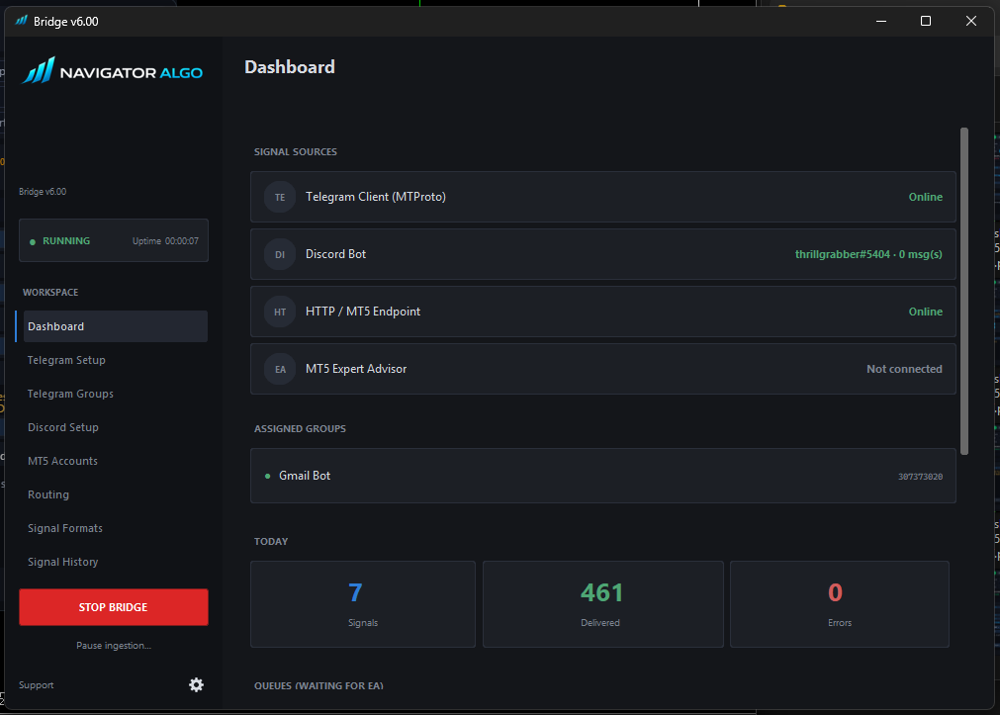
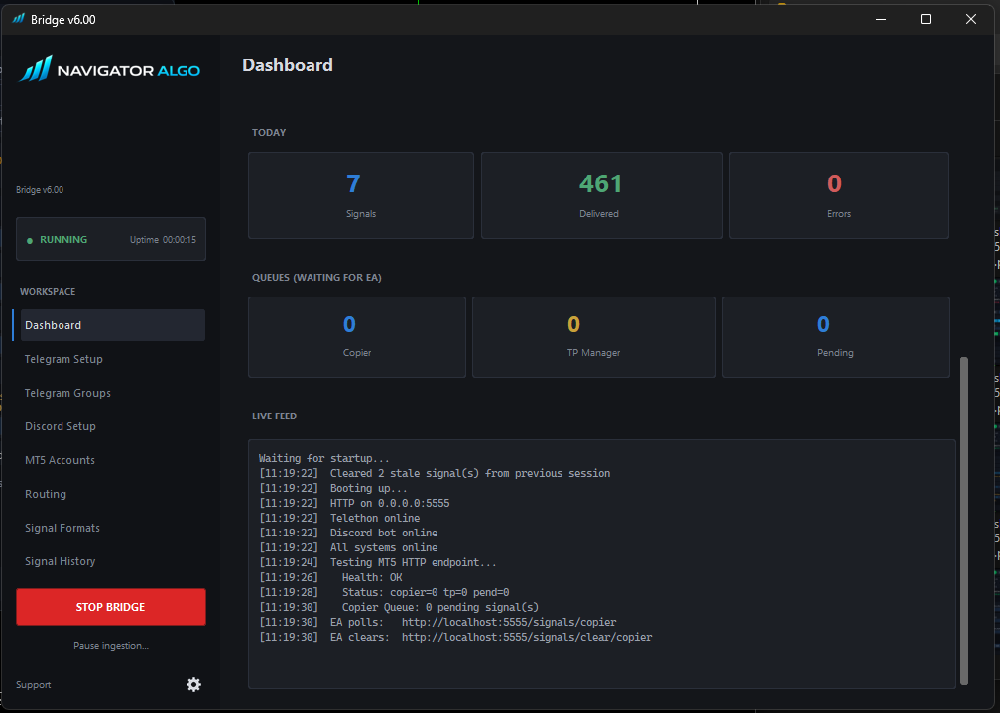
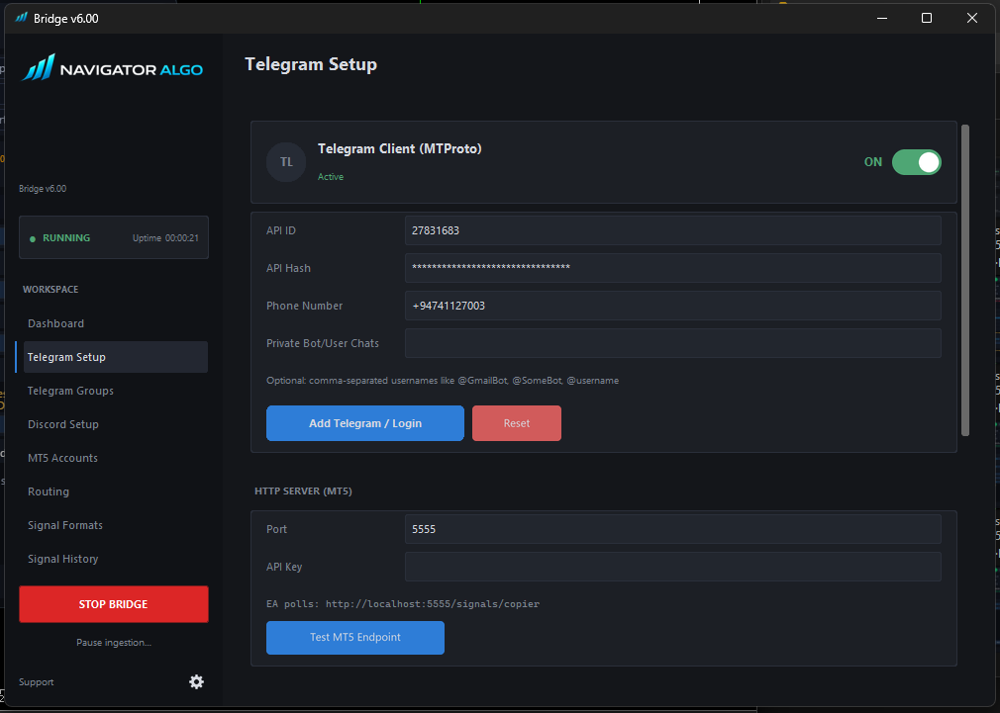
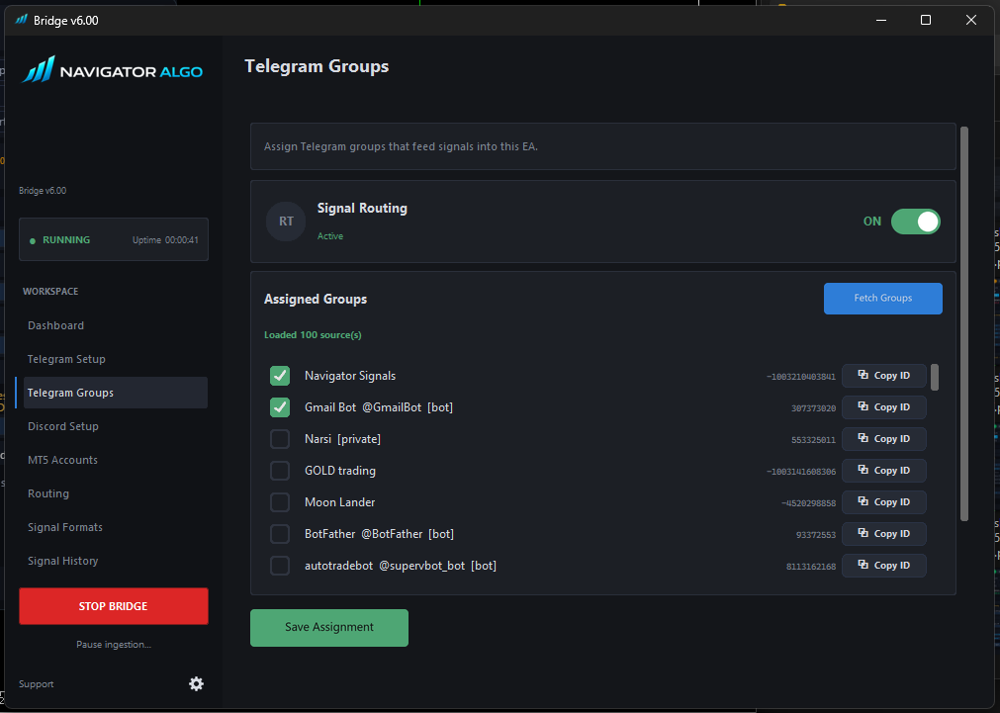
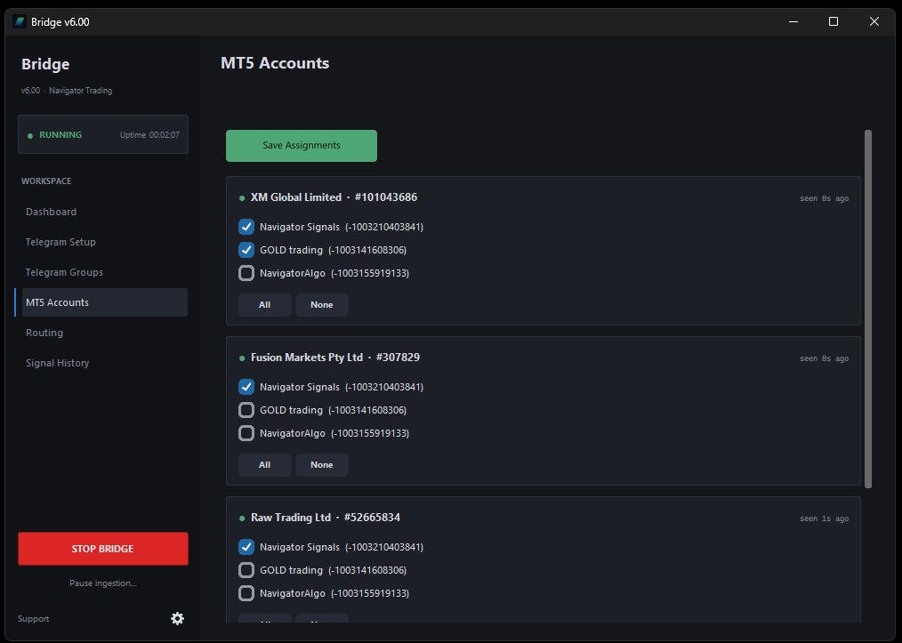
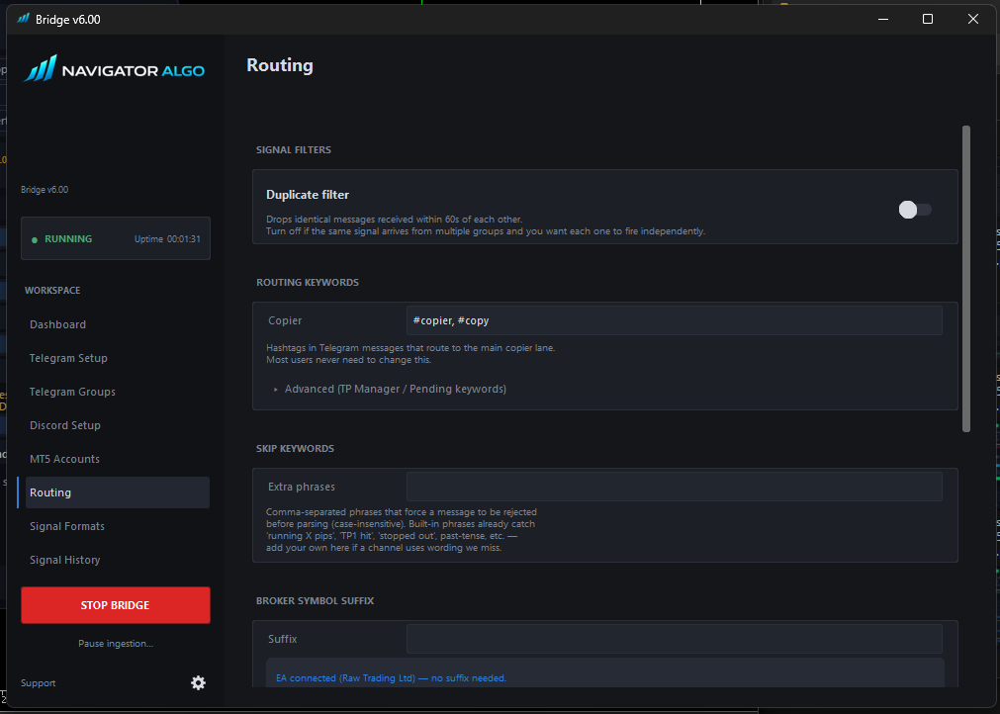
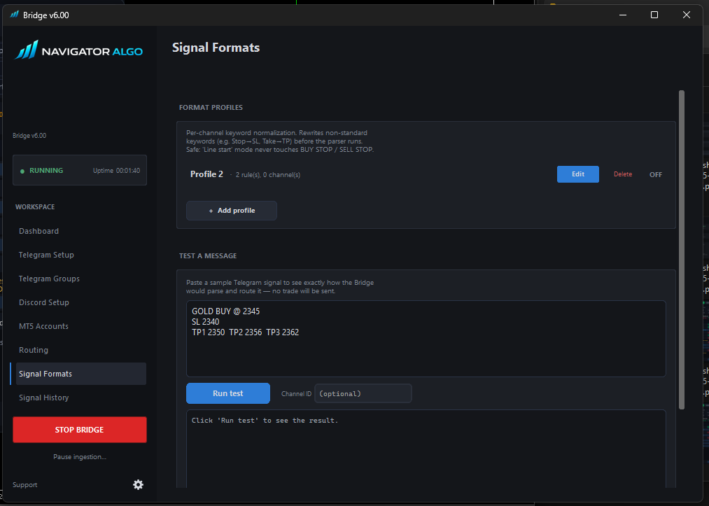
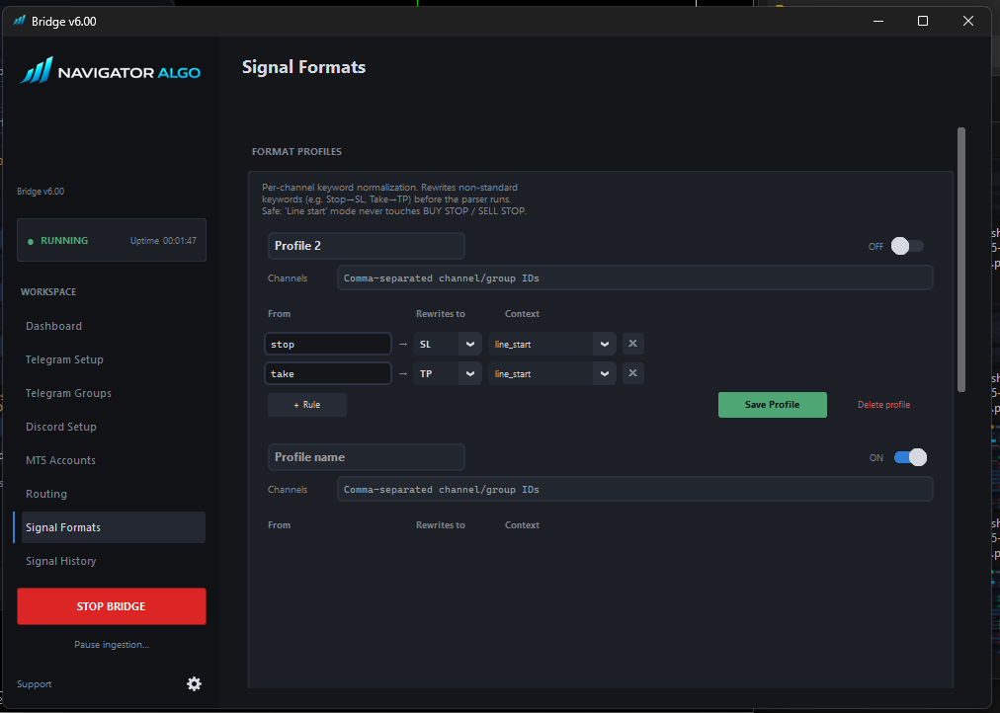
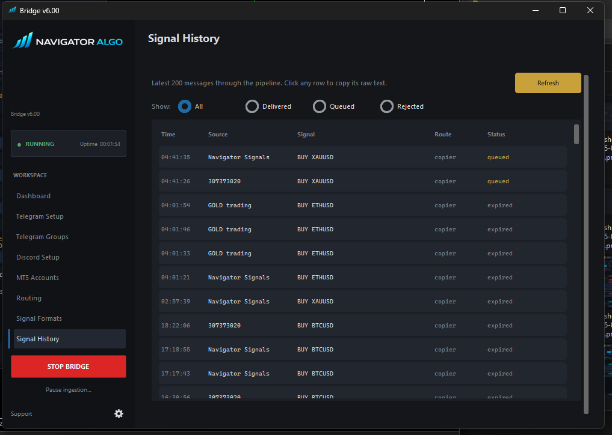

NTS Super Bridge.
The Bridge is a small Windows app that runs on the same PC as your MT5. It logs into your Telegram account (read-only via MTProto) so it can read private channels the Bot API can't reach, then routes per-account groups to the right MT5 terminal. Trade Copier Ultimate connects to it on http://127.0.0.1:<port> — nothing ever leaves your machine.
The Live Pipeline.
Real-time visibility
The Dashboard is your operational command center. Watch signals arrive, get parsed, and be routed to your MT5 terminals in real-time.
Live Status — Monitor your Bridge uptime, Telegram MTProto client connection, and the local HTTP server status at a glance.
Feed Logs — The real-time console shows exactly what the Bridge is doing: connecting to groups, receiving messages, matching format profiles, and rejecting duplicates.


Deep diagnostic logging
Never guess why a signal was missed. The Live Feed outputs detailed execution steps for every single message.
See exactly which Telegram group sent the message, which format profile the Bridge used to parse it, and whether it was successfully placed onto the HTTP queue for MT5 to pick up.
Ingest from anywhere.
Telegram MTProto & Discord
Connect the Bridge to your own Telegram account to read private channels, or set up a Discord webhook receiver.
Telegram Setup — Enter your API ID and Hash (from my.telegram.org) and log in with your phone number. The Bridge acts as a read-only client, pulling messages from any group you are a member of—including private VIP channels where bots are banned.
Group Selection — Once connected, the Bridge lists every Telegram group you're in. Simply toggle the switches for the channels you want to monitor. You can even assign custom display names.
Discord Webhooks — Prefer Discord? Provide the Bridge with a webhook URL and it will listen for incoming payloads, seamlessly converting them into MT5-ready signals.


One Bridge, Many Terminals.

Route specific groups to specific accounts
The Bridge doesn't just broadcast blindly. It acts as a smart router between your Telegram channels and your MT5 terminals.
Register Accounts — Add your MT5 account numbers directly into the Bridge UI.
Selective Routing — Want your high-risk "Gold VIP" Telegram signals to only go to your personal $500 account, while the conservative "Forex Safe" signals go to your $100k Prop Firm account? You can do that. Assign specific Telegram groups to specific MT5 accounts with a single click.
Block the noise, pass the signal.
Pre-processing at the edge
Clean up your provider's mess before it ever reaches your EA.
Duplicate Filter — If a provider forwards the exact same signal into three different VIP rooms, the Bridge catches it. It caches the signal hash for 60 seconds and drops any identical copies, ensuring your EA only executes once.
Skip Keywords — Some providers post chatty updates like "Running in profit!" or "TP1 smashed". Add words like running, hit, or smashed to the skip list, and the Bridge will instantly discard those messages without bothering the EA.
Lane Routing — Advanced users can use Lane tags (e.g., #copier) to separate different signal types (like market execution vs pendings) if the provider supports it.

Teach the Bridge to speak any language.


Fix bad signal formats automatically
Not every provider sends clean, EA-friendly signals. The new Per-Channel Format Profile system solves this by letting you define "find and replace" rules for specific Telegram groups.
Context-Aware Rewriting — If a provider writes Target: 2050 instead of TP: 2050, create a rule to replace Target: with TP:. The Bridge applies this rule the millisecond the message arrives.
Per-Channel Specificity — You can assign these profiles globally, or tie them exclusively to specific Telegram Channel IDs. This prevents a rule meant for Provider A from accidentally corrupting the signals of Provider B.
Built-in Tester — Not sure if your rule works? Use the built-in signal tester to paste a raw message and see exactly how the Bridge will rewrite it before it hits your MT5.
A complete Audit Trail.
Full transparency
The Bridge keeps a running log of the last 200 messages processed through the pipeline.
Delivery Status — Instantly see if a message was Delivered to the EA queue, Rejected by a filter, or marked as a Duplicate.
Raw Text Access — Click on any row to view and copy the raw signal text. This is invaluable for debugging why a signal failed to execute in MT5—you can see exactly what the provider sent versus what the EA received.

Windows SmartScreen.
Because the Bridge is a new executable downloaded from the internet, Windows SmartScreen may flag it. Click "More info" and then "Run anyway" to bypass this warning. The app is completely local and open-source on GitHub.